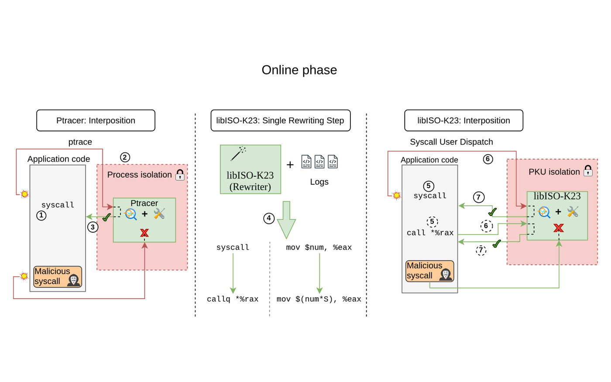
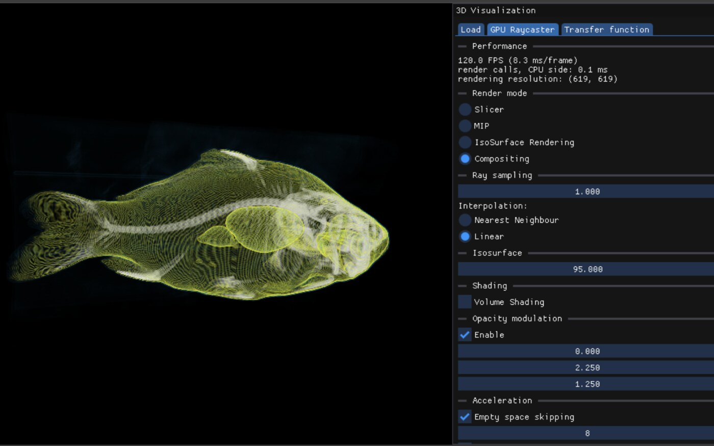

IBTpoline: Flexible, Robust, and Intel IBT-compliant System Call Hooking
USENIX ATC 2026
Systems and software engineer · Delft, Netherlands
Software engineer and MSc graduate from TU Delft. Most of my recent work is systems engineering in C and C++ on Linux, including a system call interposer hardened with Intel PKU. I co-authored two research papers in this area, one accepted at USENIX ATC 2026. My experience also covers full-stack development from internships and computer graphics from my master's.
USENIX ATC 2026
Submitted, awaiting results

Oct 2025 - Jun 2026
MSc thesis. Extends K23, a user-space system call interposer, with Intel PKU isolation so the application it monitors cannot tamper with the interposer's own code, stacks, heap and thread-local state. Blocks all 56 proof-of-concept attacks in its test suite and stays within 10% of native throughput on nginx, lighttpd, Redis, Memcached, SQLite and Nanomsg. Formed the basis of the Mystes paper.
C · C++ · x86-64 ASM · Intel PKU
Code under embargo for now

Feb 2025 - Sep 2026
Started as a 3D visualization course project and later ported to the web. Renders 3D volumes such as CT scans with GPU raycasting and 2D flow fields with streamlines and line integral convolution. Runs natively with C++ and OpenGL, and in the browser through WebAssembly and WebGL2.
C++ · OpenGL · Emscripten
Live demo Code is private

Sep 2026
Photo metadata editor. Place photos on a map and a timeline to set date, time and location for a whole folder at once. A single Rust engine runs in the browser through WebAssembly and on the desktop through Tauri.
Rust · WebAssembly · Tauri · JavaScript

Apr - Jun 2025
Group project for the TU Delft Hacking Lab. Scanned the Dutch IPv4 space and found about 7,600 hosts exposing SNMPv3. The unauthenticated SNMPv3 discovery exchange leaks vendor and uptime, which let us attribute about 6,100 hosts to 63 vendors and estimate how many CVEs each device has missed since its last reboot.
Python · ZMap · tshark

Sep 2022 - May 2023
BEng thesis. Generates and runs 4G LTE emulation experiments on the POWDER testbed from a YAML description of eNBs, UE mobility and traffic. I also extended the OpenAirInterface UE and the multi-UE proxy to support controlled X2 handovers across multiple eNBs.
Python · C · Kubernetes

Sep - Dec 2021
Course project for the Informatics Large Practical. Route planner for a simulated food delivery drone, using Theta* any-angle pathfinding around no-fly zones. Reordering pickups and prioritising higher-value orders raised delivered value from about 96% to 99%. Outputs flight paths as GeoJSON.
Java · Maven · Apache Derby · GeoJSON

Dec 2020
Desktop visualizer for pathfinding and maze generation. Draw walls or generate a maze, then watch A*, Dijkstra, BFS, DFS or greedy search explore the grid.
Java · Swing · Gradle